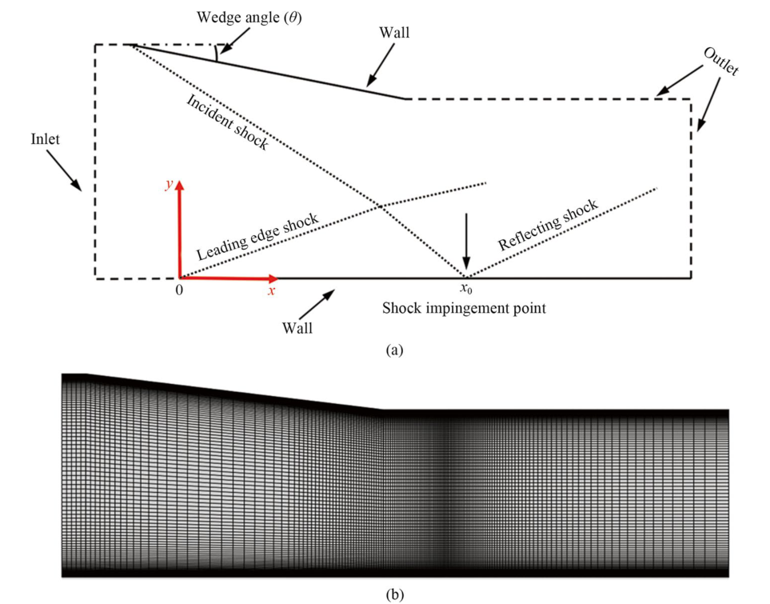
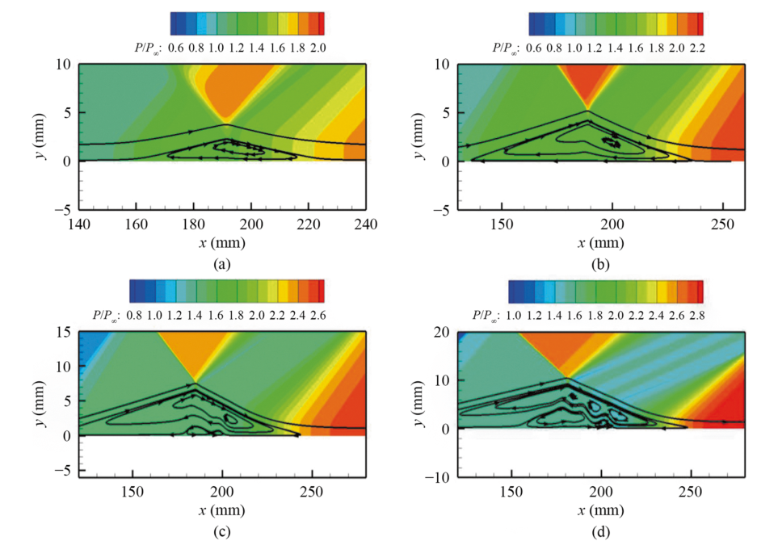
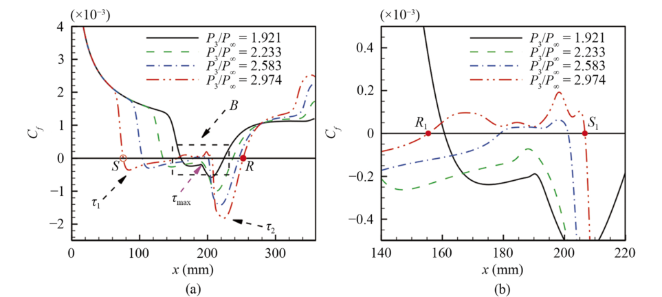
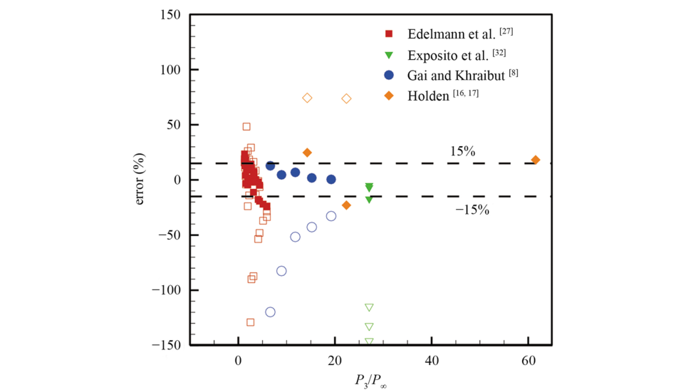

01中文摘要
激波/边界层干扰诱导的层流分离严重影响超声速飞行器气动性能。以入射激波/平板模型为对象，采用直接数值模拟研究不同激波强度和壁温下斜激波/层流边界层的分离流动。结果表明，随激波强度增大，分离区内出现二次分离区，二次分离区增大主分离区的法向压力梯度；其尺寸随壁温升高先增后减直至消失。基于Katzer预测公式，考虑壁温影响优化分离泡尺寸预测式；实验与数值验证表明，该式在马赫1.6–15、壁温比0.2–1范围内可准确预测主分离区尺度，并在绝热和等温壁条件下均适用。
原始摘要（英文/原文）
Laminar flow separation caused by shock wave-boundary layer interaction is a critical issue for supersonic vehicles, which significantly affects their aerodynamic performance. In-depth studies of the flow separation characteristics and accurate predictions of the separation zone dimensions are essential for optimizing flow control strategies and determining the location of the peak heat flux. This study focuses on the incident shock wave flat plate model and employs direct numerical simulation to investigate the separation flow caused by an incident shock wave-laminar boundary layer under varying shock intensities and wall temperatures. The research results show that with increasing shock intensity, a secondary separation zone appears within the separation region, and the emergence of this secondary zone increases the normal pressure gradient of the primary separation zone. The size of the secondary separation zone first increases, then decreases, and ultimately vanishes as the wall temperature increases. Additionally, based on the Katzer prediction formula, the separation bubble dimension prediction formula was optimized by considering the effects of wall temperature. Experimental and numerical validations demonstrate that the optimized formula can predict the scale of the primary separation zone in the Mach number range of 1.6–15 and wall temperature ratios of 0.2–1. The formula exhibits excellent predictive accuracy under both adiabatic and isothermal wall conditions and remains reliable in accurately predicting the primary separation bubble dimension even in the presence of secondary separation.
02阅读说明
文章类型：数值模拟（二维定常DNS/有限体积求解N-S方程）+ 经验公式修正。材料范围：24页全文（PAGE 1-24）已全部读完；bundle 提供16张抓图（Fig.1-10、14-16、21、23、24），Fig.11-13、17-20、22 未抓图但正文有对应文字与图注。图表可读性：压力/摩阻/涡量等主图可读；PDF文本层公式（尤其式1、7、12、19、24）有乱码，已用原PDF第2、17、18、19、20页核对关键公式。信息完整度：高；摘要、方法、验证、结果、结论齐全。提取口径：仅依据bundle文本、图注及原PDF公式页，不引外部文献结论。 文章类型：期刊
03一句话核心与三句话摘要
入射激波-层流边界层DNS：二次分离随激波强度和壁温变化，并修正Katzer分离泡长度公式
- 问题是入射激波-层流边界层干扰中的二次分离机制与分离泡尺寸预测：Katzer公式仅适用于绝热壁、1.6≤Ma≤3.4，非绝热壁误差可达50%。 AI概括
- 作者用二维定常DNS计算Ma∞=3.4、Re∞=1.5×10^6、360 mm平板，扫描P3/P∞=1.518-2.974与Sw=0.2-1.8，发现P3/P∞在2.233与2.583之间出现二次分离，且二次分离尺度随壁温先增后减直至消失。 原文明确
- 在Katzer公式中引入壁温因子Sw^α和激波强度指数β，并用ln(Ma∞)回归马赫数项，得到Ma 1.6-15、Sw 0.2-1适用的主分离泡长度公式，数值误差多在±15%、实验误差在±20%以内。 原文明确
04核心内容清单
| 要点 | 类型 | 重要性 | 原文依据 | 属性 |
|---|---|---|---|---|
| 二次分离在Tw=320 K时首次出现在P3/P∞=2.233与2.583之间，2.583时位于激波入射点上游。 | 核心现象/判据 | A | p7、p9；Fig.4、Fig.6 | 原文明确 |
| 平台下游压力下降源于主分离涡核内的低压区，而不是二次分离的直接作用。 | 机制更正 | A | p7-8；Fig.4、Fig.5 | 原文明确 |
| 主分离泡长度Lb随激波强度和壁温升高而增大；二次分离的存在不改变这一单调规律。 | 标度规律 | A | p9、p12、p15、p23；Fig.6、Fig.10 | 原文明确 |
| 二次分离尺度随壁温先增后减、最终在Sw=1附近消失；P3/P∞=2.583时随壁温由A型转B型。 | 非单调规律 | A | p12-13；Fig.11、Fig.12 | 原文明确 |
| 壁温升高使涡核远离壁面、剪切层最大剪应力降低、壁面∂τ/∂y降低，两者竞争造成二次分离尺度非单调。 | 机制解释 | A | p13-14；Fig.13、Fig.14 | 原文明确 |
| 二次分离增强主分离区内的法向压力梯度；该效应随激波增强而增强、随壁温升高而减弱。 | 机制/结论 | A | p10、p23；Fig.8、Fig.15 | 原文明确 |
| Katzer公式的Pinc/P∞反算方法仅在超声速范围有效，Ma>6失效。 | 模型局限 | A | p16；Fig.17 | 原文明确 |
| 式(12)把Ma∞θi-χL^0.5关系分为两段：χL≤1取42χL^0.5+1.2，χL>1取90χL^0.5-43。 | 经验关系 | B | p17；式(12)、Fig.18 | 原文明确 |
| 优化公式为式(24)：Lb/δ0*·1/√Rex0=f(Ma∞,Sw)[(P3-Pinc)/P∞]^β，f=4.2Sw^-0.47·Ma^(0.4lnSw-2.9)，β=(1.06-0.032Ma∞)Sw^(-0.04lnMa∞-0.126)。 | 预测模型 | A | p20；式(24) | 原文明确 |
| 优化公式在Ma 1.6-15、Sw 0.2-1内适用；数值误差多在±15%，Holden实验误差≤±20%，Katzer公式实验误差可达70%。 | 验证结果 | A | p21-23；Fig.24 | 原文明确 |
| 计算采用二维定常假设，未讨论非定常/SWBLI低频振荡对分离泡尺寸统计的影响。 | 方法边界 | B | p3-5、p23 | AI推断 |
| 壁温对平台压力的影响主要体现在平台段，激波后最终压力几乎不受壁温影响。 | 定量现象 | B | p11；Fig.9 | 原文明确 |
05引言：研究问题与领域缺口
【原文明确】引言指出SWBLI是超声速/高超声速飞行器设计的核心难题，分离会增大阻力、抬高峰值热流并影响热防护可靠性（p1）。已有压缩拐角实验与CFD已确认二次分离结构及其拓扑复杂性，但其主导机制及与壁温的定性关系仍不清楚（p2）。另一缺口是分离泡尺寸预测：Katzer公式（式1）仅在1.6≤Ma≤3.4、绝热壁下有效；Krishnan等公式在非绝热壁误差可达50%（p2）。因此目标是：用DNS研究激波强度与壁温对分离（含二次分离）的影响，并优化Katzer公式以扩大马赫数与壁温适用范围（p3）。
06流动条件与几何构型
| 项目 | 数值/描述 | 依据 | 备注 |
|---|---|---|---|
| 来流马赫数 M∞ | 3.4 | p5，§2.1.3 | |
| 来流雷诺数 Re∞ | 1.5×10^6（原文未注明参考长度） | p5，§2.1.3 | 原文只写 Re∞=1.5×10^6 |
| 来流静温 T∞ | 160 K | p5 | |
| 基准壁温 Tw | 320 K（Tw=0.6Tad） | p5、p7 | |
| 总温 T0 定义 | T0=T∞[1+(γ-1)M∞²/2]，γ=1.4 | p5 | |
| 楔角 θ | 2.5°；对应P3/P∞=1.518 | p5 | |
| 楔角 θ | 3.2°；对应P3/P∞=1.697 | p5 | |
| 楔角 θ | 4°；对应P3/P∞=1.921 | p5 | |
| 楔角 θ | 5°；对应P3/P∞=2.233 | p5 | |
| 楔角 θ | 6°；对应P3/P∞=2.583 | p5 | |
| 楔角 θ | 7°；对应P3/P∞=2.974 | p5 | |
| 壁温工况 Tw | 106 K，Sw=Tw/T0=0.2 | p5 | |
| 壁温工况 Tw | 160 K，Sw=0.3 | p5 | |
| 壁温工况 Tw | 212 K，Sw=0.4 | p5 | |
| 壁温工况 Tw | 425 K，Sw=0.8 | p5 | |
| 壁温工况 Tw | 530 K，Sw=1.0 | p5 | |
| P3/P∞=2.974附加壁温比 | Sw=1.4、1.6、1.8（对应壁温值文中未给出） | p12-13 | |
| 平板长度 | 360 mm | p4，§2.1.2 | |
| 激波入射点 x0 | 距前缘200 mm（无黏流定义） | p4 | |
| 上游楔后缘位置 | 理论无黏入射点上游10-15 mm | p4 | |
| 边界条件 | 入口自由来流；出口二阶线性外推；壁面等温无滑移 | p4 | |
| 维数/坐标系 | 二维笛卡尔，x流向、y法向，原点在前缘 | p3-4 | |
| 程序验证工况 | Ma∞=2、T∞=160 K、Rex0=3.0×10^5、β=32.68°、绝热壁 | p5-6 | |
| 网格无关性工况 | P3/P∞=2.974、Tw=530 K | p6，§2.2.2 | |
| 计算网格（采用） | Grid 2：Nx=1501、Ny=2001、Δx=0.16 mm、Δs1=0.5×10^-3 mm、n=3.0×10^6 | p7，Table 1 |
07核心现象与关键参数
| 参数 | 定义 | 数值 | 关系/说明 | 依据 |
|---|---|---|---|---|
| Lb | 主分离泡长度：主分离点S（Cf=0）与再附点R（Cf=0）之间距离 | 随P3/P∞和Tw增大而增大 | 主分离标度 | p9、Fig.6 |
| Lb1 | 二次分离尺度：主分离区内所有二次分离尺度之和（统一定义A/B型） | 随Tw先增后减、最终消失 | 二次分离标度 | p9、p12，§3.2 |
| Cf | 壁面摩阻系数，Cf=τw/(0.5ρ∞u∞²) | 主分离区内出现τ1、τ2两个极小与τmax局部极大 | 式(8) | p6、p9 |
| P3/P∞ | 再附激波下游压力与来流压力之比 | 1.518、1.697、1.921、2.233、2.583、2.974 | 激波强度 | p5 |
| Sw | 壁温比 Sw=Tw/T0 | 0.2、0.3、0.4、0.8、1.0；2.974工况另加1.4、1.6、1.8 | 式(14)-(20) | p5、p12-13 |
| Pinc | Katzer公式中的初始分离压力常数 | 1.85 | 式(1) | p2 |
| Pinc/P∞ | 初始分离压力比；由式(1)反算或用式(12)计算 | DNS值由线性外推获得；Katzer法Ma>6失效 | 式(1)、式(12) | p16-17 |
| C | Chapman-Rubesin常数，C=μwT∞/(μ∞Tw) | 按壁温与来流温度计算 | 式(1) | p2 |
| δ0* | 激波入射点处边界层位移厚度 | 文中未给具体数值 | 式(1)、式(14)-(20) | p2、p17-20 |
| Rex0 | 以前缘到激波入射点距离为参考长度的雷诺数 | 随工况计算，文中未列具体值 | 式(1)、式(14)-(20) | p2 |
| χL | 黏性干扰参数（原文称viscous interference parameter） | 拟合关系以χL^0.5为横坐标 | 式(11)-(12)、Fig.18 | p16-17 |
| Ma∞θi | 高超声速相似参数，θi为初始分离角 | 分段线性关系：χL≤1与χL>1 | 式(11)-(12) | p16-17 |
| β | 式(20)/(24)中激波强度修正指数，β=aSw^b | β=(1.06-0.032Ma∞)Sw^(-0.04lnMa∞-0.126) | 式(22)-(24) | p20 |
| f(Ma∞,Sw) | 式(20)/(24)中马赫数与壁温函数 | f=4.2Sw^-0.47·Ma^(0.4lnSw-2.9) | 式(22)-(24) | p20 |
| α、ω | 壁温修正指数与马赫数修正指数 | 由回归吸收进f(Ma∞,Sw)与β；文中未单列α、ω数值 | 式(20)-(24) | p19-20 |
08方法与数据
【原文明确】二维笛卡尔坐标下有限体积求解无量纲N-S方程（式2-6），LU-SGS隐式时间推进，黏性项二阶中心格式，无黏项三阶MUSCL+van Albada限制器+Steger-Warming通量分裂，Sutherland黏性（p3、p5）。计算域为360 mm平板+上游楔面，激波入射点固定x0=200 mm，楔后缘置于无黏入射点上游10-15 mm以避开膨胀扇（p4）。来流Ma∞=3.4、Re∞=1.5×10^6、T∞=160 K，基准Tw=320 K；楔角2.5°-7°对应P3/P∞=1.518-2.974，另取Tw=106/160/212/425/530 K（Sw=0.2/0.3/0.4/0.8/1.0）（p5）。程序用Hakkinen实验及Katzer、Yao、Wasistho数值结果验证（Ma=2、Rex0=3.0×10^5、β=32.68°、绝热壁，Fig.2，p5-6）。网格无关性用5套网格（Table 1，p7），最终采用Grid 2（1501×2001，入射点Δx=0.16 mm，首层间距0.5×10^-3 mm）。【AI概括】验证显示压力吻合，摩阻与实验有差异，作者归因于实验再附区转捩。
| 项目 | 内容 | 依据 | 备注 |
|---|---|---|---|
| 控制方程 | 二维笛卡尔坐标无量纲N-S方程积分形式，式(2)-(6) | p3，§2.1.1 | |
| 空间离散 | 有限体积；黏性项二阶中心；无黏项三阶MUSCL+van Albada限制器+Steger-Warming通量分裂 | p5 | |
| 时间推进 | 隐式LU-SGS | p5 | |
| 黏性 | Sutherland律 | p3 | |
| 计算域/网格 | 360 mm平板+上游楔；激波入射点附近加密，壁法向双曲正切拉伸；Grid 2（1501×2001，n=3.0×10^6） | p4、p6-7，Table 1 | |
| 程序验证 | 与Hakkinen实验、Katzer/Yao/Wasistho数值结果对比（Ma=2、Rex0=3.0×10^5、β=32.68°、绝热壁） | p5-6，Fig.2 | |
| 网格无关性 | 5套网格；Grid 2与Grid 3的Cf分布一致，Grid 5与Grid 2接近，Grid 4不足；选Grid 2 | p7，Fig.3、Table 1 | |
| 求解类型 | 定常解；文中未讨论时间平均/非定常统计 | p4、§2.1.3 | AI概括：全文以稳态场分析为主 |
| 分离/再附判据 | Cf=0定义主分离点S与再附点R；∂u/∂y=0定义二次分离点S1与再附点R1 | p9 | |
| 二次分离类型 | A型为单个二次分离区；B型为两个及以上二次分离区 | p12，Fig.11 | |
| 预测模型回归 | 对式(21)做ln-ln线性回归得β与f；再对β、f做幂律/对数回归得a、b、c、d；式(22)-(24) | p19-20，Fig.20-22 | |
| 误差定义 | error=(Lb,predicted-Lb,literature)/Lb,predicted×100% | p22，式(25) | |
| 验证数据范围 | Katzer绝热壁数据+文献[8,16,17,27,32]等温壁数值/实验数据；Ma 1.6-15、Sw 0.2-1 | p20-22，Fig.23-24 |
09核心推导与公式
以Katzer的Chapman-Rubesin型分离泡标度为起点，把初始分离压比Pinc/P∞改为分段高超声速相似关系，引入壁温因子Sw^α与激波强度指数β，再把马赫数依赖由纯经验拟合改写为Ma∞^ω，最后用对数线性回归分层确定各系数。
关键假设
- 分离泡长度Lb与相互作用长度L成正比（原文“we assume Lb ∝ L”，p19）。
- 初始分离满足Ma∞θi∝χL^0.5/√(ReL/C)型分离判据（式11，p16）。
- 壁温影响可用Zhu等的Lb/δ0*∝Sw^0.85标度并推广为Sw^α（式13-14，p17）。
- 高超声速相似参数与黏性干扰参数在χL=1两侧呈两段线性（式12，p17）。
- 回归时把f(Ma∞,Sw)=KMa∞^ωSw^α整体视为待定函数，先取对数把β线性化（式21，p19）。
推导过程
以式(1)给出Lb/δ0*·1/√(Rex0/C)=4.4(P3-Pinc)/P∞，并用(Pinc-P∞)/P∞=0.5γMa∞²Pinc(2Cf0/√(Ma∞²-1))^0.5联系初始分离压比与当地摩阻；Pinc取常数1.85。
采用边界层分离判据Ma∞θi∝χL^0.5（式11），并由Ma 1.6-15.6数据拟合为两段：χL≤1与χL>1各有不同斜率，拐点在χL≈1（Fig.18）。
由Zhu等的Lb/δ0*∝Sw^0.85出发，把指数推广为待定α，得到式(14)；在(P3-Pinc)/P∞<1时不同壁温下Lb与该压力比近似线性但斜率不同，故再允许激波强度指数β，得式(15)。
由超声速简单波的压力-流向关系（式16）及其线性化（式17），再用“排除”概念把位移厚度斜率写成流向偏角（式18），引入无量纲f(x̄)=dδ̄*/dx̄、x̄=(x-x0)/L、δ̄*=δ*/δ0*，得式(19)。
在Lb∝L假设下，Lb/δ0*∝L/δ0*∝Ma∞^ω，于是把壁温、激波强度、马赫数三个修正合并为式(20)；定义f(Ma∞,Sw)=KMa∞^ωSw^α并对式(20)两边取对数，得到可线性回归的式(21)。
先按式(21)对每个Ma∞、Sw工况回归得β与f；再用β=aSw^b、f=c ln(Ma)+d拟合，得a=1.06-0.032Ma∞、b=-0.126-0.04ln(Ma∞)、c=-2.9+0.4ln(Sw)、d=1.43-0.47ln(Sw)（式22-23）。
把式(23)代回式(22)并整理为显式的f与β，得到式(24)；这就是本文用于预测主分离泡尺寸的最终公式。
适用边界：公式仍以Katzer型标度为骨架，Pinc/P∞由式(12)给出；回归数据以本文二维定常层流DNS为主，外部数据多为文献点；二次分离存在时作者只验证了主分离泡尺寸，未给出二次分离尺度本身的预测式。式(19)的L尺度、式(20)的K、α、ω未单列数值，实际使用需按式(24)的显式形式。
10结果：主要发现与关键证据
【原文明确】Tw=320 K时，P3/P∞=2.583出现位于激波入射点上游的二次分离；增至2.974时二次分离沿流向扩大，主分离区破碎为多涡，涡核内出现低压区（p7，Fig.4）。壁面压力在P3/P∞=2.233出现明显平台；2.583与2.974时平台下游压力下降，作者用Fig.4说明这是涡核低压区造成，而非二次分离本身（p7-8）。摩阻曲线在主分离区内有两个局部极小τ1、τ2和一个局部极大τmax；τmax转为正值即标志二次分离，Tw=320 K时二次分离首次出现在2.233与2.583之间（p9，Fig.6）。随激波增强，分离点前移、再附点后移，Lb增大；逆向流速增大，A-A截面法向压力梯度在2.583开始出现并随激波增强而增强（p10，Fig.8）。壁温升高使平台压力升高、再附段压力上升变缓，平台下游压降减弱且最低压力点Plow前移；分离点前移、再附点后移，Lb增大（p11-12，Fig.9-10）。P3/P∞=2.583时Sw=0.3为A型二次分离，Sw=0.8转为B型，Sw=1时二次分离完全消失（p12，Fig.11）。二次分离尺度定义为所有二次分离尺度之和；随壁温升高先增后减最终消失；P3/P∞=2.974另加Sw=1.4/1.6/1.8（p12-13，Fig.12）。壁温升高使涡核下移远离壁面、剪切层最大剪应力下降、壁面∂τ/∂y下降，二者竞争导致二次分离尺度非单调（p13-14，Fig.13-14）。涡核处法向压力先降后升，法向压力梯度极小值随壁温升高而减小（p14-15，Fig.15）。
| 发现 | 证据 | 证据类型 | 强度 | 位置 | 属性 |
|---|---|---|---|---|---|
| Tw=320 K时，二次分离首次出现在P3/P∞=2.233与2.583之间；2.583时位于x=200 mm激波入射点上游。 | Fig.4c、Fig.6b中τmax由负转正；正文明确阈值区间 | 实验/数值现象 | 强 | p7、p9，Fig.4、Fig.6 | 原文明确 |
| 平台下游压力下降由主分离涡核内低压区造成，不是二次分离的直接压力特征。 | Fig.4在2.974工况显示涡核低压区；Fig.5b压降随激波增强而更明显；作者据此反驳Smith-Khorrami与Prakash的解释 | 机制证据 | 中 | p7-8，Fig.4-5 | 原文明确 |
| 主分离泡长度Lb随激波强度和壁温升高而增大，二次分离不改变该定性规律。 | Fig.6a、Fig.10a的S/R位置随工况移动；结论(1)明确does not affect the qualitative variation | 参数规律 | 强 | p9、p12、p23 | 原文明确 |
| 二次分离尺度随壁温先增后减并最终消失；P3/P∞=2.583时A型在Sw=0.8转为B型、Sw=1消失。 | Fig.11类型示意；Fig.12不同壁温下二次分离区尺度；正文给出A→B→消失序列 | 非单调规律 | 强 | p12-13，Fig.11-12 | 原文明确 |
| 壁温升高使涡核远离壁面、剪切层最大剪应力降低、壁面∂τ/∂y降低。 | Fig.14a涡核位置（实心圆）与τmax；Fig.14b壁面∂τ/∂y随Tw降低 | 剖面证据 | 中 | p13-14，Fig.14 | 原文明确 |
| 二次分离增强主分离区法向压力梯度；随激波增强而增强、随壁温升高而减弱。 | Fig.8b：2.583开始出现法向压力梯度；Fig.15b：涡核处法向压力梯度极小值随Tw升高而降低 | 剖面证据 | 中 | p10、p14-15、p23，Fig.8、Fig.15 | 原文明确 |
| Katzer公式随(P3-Pinc)/P∞增大而偏离；其Pinc/P∞反算方法在Ma>6失效。 | Fig.16拟合点偏离虚线；Fig.17 DNS与式(1)反算值在Ma>6分离 | 模型验证 | 强 | p15-16，Fig.16-17 | 原文明确 |
| 式(24)数值误差多在±15%、实验误差≤±20%，Katzer公式实验误差可达70%。 | Fig.24相对误差对比；结论(3)给出误差不超过20% | 定量验证 | 强 | p21-23，Fig.24 | 原文明确 |
11机制解释与论证链
【原文明确】负涡量剪切层把外部无黏流动量输运给主分离区；输运越强，主分离涡旋转越强，涡核附近低压区越大，内外压差与壁面逆压梯度越大（p9）。二次分离出现后，主分离区法向压力不再近似常数，而出现法向压力梯度，并随激波增强而增强；其原因是激波/边界层干扰增强使边界层内压力梯度增大，边界层更易失稳分离（p10）。壁温升高有两条相反作用：一方面涡核远离壁面、剪切层最大剪应力下降，外部向分离区的动量输运减弱，涡核低压区造成的壁面逆压梯度减小；另一方面壁面∂τ/∂y下降，边界层抵抗逆压梯度的能力减弱；两者竞争导致二次分离尺度随壁温非单调（p13-14）。【AI推断】作者用“动量输运-涡核低压-壁面逆压梯度”链条解释二次分离尺度，但未给出涡核低压区强度与Lb1的定量关系式。
12讨论：结论、贡献与局限
【原文明确】作者把主分离泡随激波强度和壁温单调增大、且不被二次分离改变定性规律作为可继续使用Katzer型标度的依据（p15）。Katzer公式随(P3-Pinc)/P∞增大而偏离理论值；当(P3-Pinc)/P∞>1时，壁温和二次分离显著降低精度（p15-16，Fig.16）。Katzer由式(1)反算的Pinc/P∞仅在超声速范围有效，Ma>6失效（p16，Fig.17）。作者用式(11)-(12)分段拟合Ma∞θi与χL^0.5关系，用式(13)-(15)引入壁温因子并允许激波强度指数β，用式(16)-(20)把马赫数依赖改写为Ma∞^ω，再用式(21)的对数线性回归分层确定β、f、a、b、c、d，最终得式(24)（p16-20）。验证用Katzer绝热壁数据及文献[8,16,17,27,32]的等温壁数值/实验数据，Fig.23显示数据点分布在预测线两侧；Fig.24给出数值误差多在±15%、Holden实验误差在±20%以内，而Katzer公式实验误差可达70%（p20-22）。【AI推断】作者将“主分离泡尺寸单调性不受二次分离影响”作为跨工况使用Katzer型标度的物理依据，但文中未给出该单调性成立的定量判据（如二次分离尺度/主泡尺度比的上限）。
作者结论
【原文明确】作者结论三条：(1) 二次分离影响主分离区法向压力分布，激波越强影响越大、壁温越高影响越弱；二次分离不改变主分离泡尺寸随激波强度和壁温的定性变化（p23）。(2) 随激波增强二次分离逐渐明显；在出现二次分离的激波强度下，其尺度随壁温先增后减、最终消失（p23）。(3) 基于Katzer公式并考虑壁温影响优化后，可在Ma 1.6-15、Sw 0.2-1内预测主分离泡尺寸，相对误差不超过20%，且二次分离存在时仍能较好预测（p23）。【AI概括】核心贡献是把壁温效应显式写入Katzer型标度，并用分段Pinc关系替代Katzer在Ma>6失效的反算方法。
主要贡献
- 给出入射激波-层流边界层在Ma∞=3.4、P3/P∞=1.518-2.974、Sw=0.2-1.8范围内的二维定常DNS数据库。
- 识别出Tw=320 K时二次分离的激波强度阈值（2.233-2.583）及A型→B型→消失的壁温演化。
- 用涡核低压区解释平台下游压降，修正了二次分离直接造成压降的既有解释。
- 提出式(12)的分段Pinc/P∞关系，规避Katzer反算方法在Ma>6失效的问题。
- 建立式(24)的壁温/激波强度/马赫数三参数主分离泡长度预测式，并给出±15%/±20%量级的验证误差。
局限与未解决问题
【原文明确】计算为二维定常，未考虑三维效应与非定常性；验证数据部分来自文献且工况超出本文范围；式(24)只预测主分离泡尺寸，不含二次分离尺度；Katzer型标度的L尺度、K、α、ω未单列。作者承认Katzer公式原本仅适用于绝热壁、1.6≤Ma≤3.4，且Pinc反算在Ma>6失效（p2、p16）。【AI推断】二次分离阈值仅给出2.233-2.583区间，未细化工况；壁温对平台压力的影响与来流总温定义强相关，外推到真实飞行总温需重新标定；未讨论壁面热流、粗糙度、来流湍流度对二次分离的影响。
13对高速流动与工程的意义
【AI推断】对高超声速飞行器控制面/进气道/隔离器设计，本文给出一个可直接用Ma∞、Sw、P3/P∞和Rex0估算主分离泡长度的工程式子，并提示：壁温既改变主分离泡长度，也通过动量输运-边界层抗逆压能力竞争改变二次分离尺度，因此热防护/主动冷却设计不能只按绝热壁标度外推。二次分离阈值与A/B型分类可用于判断CFD/实验中是否出现多涡结构，以及峰值热流位置评估时是否需要考虑主分离区内部压力梯度。文中未给出热流、总压损失或控制面效率的定量结果，不能直接回答这些工程量。
14核心图件




15可引用原文素材
| 原文短句 | 可支持的观点 | 位置 | 使用建议 |
|---|---|---|---|
| “a secondary separation appears upstream of the shock impingement point” | 二次分离的空间位置（2.583工况） | p7，§3.1 | 说明二次分离出现在激波入射点上游，而非下游再附区 |
| “the primary separation zone fragments into multiple vortices” | 强激波下主分离区多涡结构 | p7，§3.1 | 与Gai-Khraibut的高马赫数观察相呼应 |
| “this pressure drop is caused by the low-pressure region” | 平台下游压降的机制归属 | p8，§3.1 | 纠正二次分离直接造成压降的解释 |
| “the scale of the secondary separation region first increases, then decreases, and eventually vanishes” | 二次分离尺度随壁温非单调 | p13，§3.2 | 作为壁温效应的核心结论引用 |
| “the existence of secondary separation does not affect the qualitative variation” | 主分离泡尺寸规律的鲁棒性 | p23，结论(1) | 支撑在二次分离存在时仍可用Katzer型标度 |
| “Katzer's calculation method remains valid only within the supersonic regime” | Katzer的Pinc反算在Ma>6失效 | p16，§3.3 | 说明必须改用式(12)的分段关系 |
| “the relative error of the predictions from this study's formula mostly falls within ±15%” | 优化公式的数值验证精度 | p22，§3.3 | 给出定量精度上限 |
| “with a relative error not exceeding 20%” | 优化公式的实验验证精度 | p23，结论(3) | 作为工程适用性的定量表述 |
16最终核验
| 核验项 | 结论 |
|---|---|
| 仅基于全文 | 是。仅使用bundle全文、图注及原PDF第2、17-20页公式；未引入外部文献结论。 |
| A 级要点有依据 | 是。A级要点均有页码+图/式/节定位：二次分离阈值（p7、p9；Fig.4、Fig.6）、压降机制（p7-8；Fig.4-5）、Lb规律（p9、p12、p23）、非单调性（p12-13；Fig.12）、式(24)与误差（p20-23；Fig.24）。 |
| 属性标注 | 是。three_sentence、core_points、findings均标注原文明确/AI概括/AI推断；imrad与mechanism段落内用【】标注。 |
| 覆盖范围 | 全文24页已读至EOF；16张抓图全部核对图注；未抓图的Fig.11-13、17-20、22仅依据正文文字与图注描述，未臆测其曲线细节。 |
| 无编造 | 未编造页码、图号、公式或数据。式(1)、(12)、(14)、(15)、(19)-(24)已对照原PDF核对；个别PDF文本层不清处（如式(19)的f(x̄)具体形式）按原页图像转录，未补写。Re∞的参考长度原文未注明，已注明原文未注明。 |
需回原文确认
- Re∞=1.5×10^6的参考长度是什么（单位雷诺数还是以平板长度/入射点距离为参考）？原文未说明。
- Pinc/P∞的DNS值线性外推具体如何实施、在多少个Ma下取点？正文仅一句带过（p16）。
- 式(19)中相互作用长度L如何定义、与Lb的比例系数是否随工况变化？
- 式(24)回归所用外部数据的具体清单、各数据点权重与不确定度未给出。
- Sw=1.4/1.6/1.8三个附加工况的对应壁温数值未列出，仅给壁温比。
- 二维定常解是否能代表实验中可能存在的非定常分离泡统计尺寸？文中未讨论。
- 二次分离尺度Lb1在B型（多区）时如何逐区求和、是否按流向长度直接相加？正文只给定义，未给算例。
- 平台下游最低压力点Plow与涡核低压区中心的对应关系是否有定量剖面证据？
17关联文献
依据标签、板块、构型与作者脉络自动关联，可据此追踪同一问题的前序与后续工作。
18引用格式
选择期刊风格后复制；出处保留原刊名。BibTeX 可直接用于 LaTeX。
引用格式
Zhang, H., Gai, D. & Cao, W. 2026 Research on the flow separation characteristics of shock wave-boundary layer interaction. Advances in Aerodynamics 8 (1), 23. https://doi.org/10.1186/s42774-025-00221-8
PDF上传 PDF 并更新本页
本页缺少全文、摘要或图件时，可在浏览器本地补入 PDF。解析完全在本机完成，不上传网络；完成后会更新本页的 PDF 打开链接、原摘要、IMRaD 机器抽取、关键句与含图页面。复杂的公式语义与中文深度解读仍以原文和既有精读记录为准。